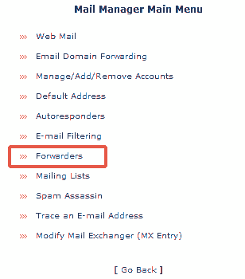
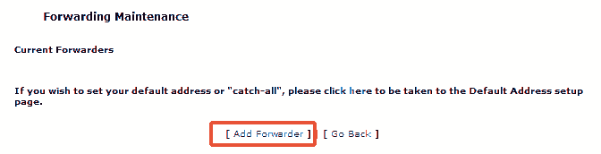
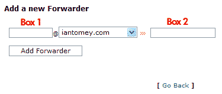
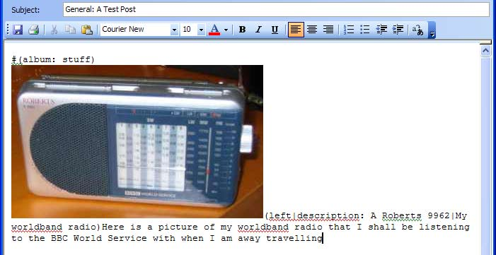
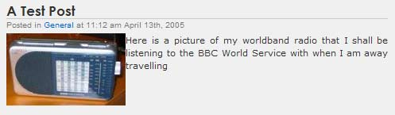
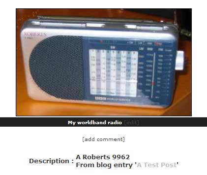

By Ian Tomey. For the latest information see this page. Help/support/queries to the forum.
This code based on the wp-mail code by By John B. Hewitt - http://blade.lansmash.com and the original from the Wordpress team.
wp-gallery-mail is a script to allow you to email entries to your Wordpress blog. This script differs from one supplied with Wordpress as it supports images and files. If an image is found in the email, it is posted to a Gallery album, and a linked thumbnail placed in the blog. Attached files of other types are saved on the server and a link is placed at the bottom of your blog post.
There are 3 ways of calling the script and having it process your emails. Your pathway to email blogging bliss is illuminated by the information at the bottom of the options page, here is an example:
Manually
If neither of the other two methods works for you then you can trigger the script manually by pointing your browser at the URL. This only works when the plugin is set into POP3 mode.
Periodically via a CRON job
You can set the server to periodically check a POP3 email account for new posts. The path to the processor script is indicated. That script may need to be modified to add a sha-bang. See the link at the end of the document for more information.
Automatically via SMTP
This is the best method - posts will be added instantly. For information on how to set this up, see the link at the end of this section. That is unless your hosting company uses the CPanel management software. If they do it's dead easy to set up just follow these instructions (screenshots may vary due to different themes).
First, go to your CPanel and select Mail or POP Mail accounts (depending on theme), which should give you a menu along the lines of

Select 'Forwarders' and you will get something like this:

Select 'Add Forwarder' to get this page:

Now, in Box 1, enter the name of the email address at your domain (i.e. 'mymailbox' not 'mymailbox@mydomain.com'). In Box 2, copy the text underneath "Pipe command (for SMTP mail forwards)" in the options window. Make sure there is no space at the start of the text, it must begin with the vertical bar ( '|' )
Hit 'Add Forwarder' and that's it!
For more information see this Wordpress document, remembering to change script name as appropriate
Supports images that are placed inline or added as attachments, and files as attachments. Files are added to wp-content by default, however this can be changed in the options page.
Post to different categories in your blog by placing either the name of the category or its number in the subject line, for example "General: This post will go in the General category"
Mail commands allow you to control things about how the blog entry is posted. These appear on the very first line of the mail and must be in the format #(command: parameters). A newline is optional afterwards, it will be discarded.
Currently supported mail commands:
| Command | Description | Example/Notes |
|---|---|---|
| album: albumname | Change the Gallery album that images will be posted to. | #(album: holiday) |
| newalbum: newname parent title | Create a new album and use this to post images to. | The only valid characters inside newname should are alphanumeric and dashes. #(newalbum: car / A collection of photos of my new car) #(newalbum: antwerp-weekend holiday Photos from my weekend in Antwerp) |
Inline images (i.e. images inserted directly into the email in HTML mode) may now have some meta information associated with them. This allows some control over the image and a title to be added. To achieve this, place the meta information in brackets immediately after the image. In the following example we use *image* to represent an image in the post:
*image*(left|border: 2px solid red|A picture of Eric Balls, a retired plumbers mate and his dog called Nuts) This is the text of the post....
Inside the brackets, the various information is broken up by vertical bars, and the final piece of text is the image title (if no image title or meta text is present, then the filename will be used). If you do not wish to specify a different image title to the filename, simply omit any description from the end, but you must be sure to have added the final vertical bar. For example (left|).
Currently supported meta items:
| Item | Description | Example/Notes |
|---|---|---|
| left | Float the image to the left | place the image for floating at the very start of the line of text |
| right | Float the image to the right | place the image for floating at the very start of the line of text |
| centre center |
Place the image in the centre | creates a block with the image centred |
border: xxx |
Add CSS border style | (border: 2px solid green|This has a 2 pixel solid green border) |
| description: xxx | Add a description in the gallery album | (description: this is a description|this is the image title) |

So in the above email we are saying this should be posted in the 'General' category, the Gallery album that the image should be posted in is 'stuff'. The image should be floated to the left, and it's description in the album is going to be "A Roberts 9962". The title of the image is "My worldband radio".

Here is how the image was posted into the blog. Note that the text is rammed up right next to the thumbnail image. See the section on Styles to fix this.

And this is how the image appears inside the Gallery album. 'A Test Post' is a link back to the blog entry.
From version 0.4 by default a number of CSS styles required by the plugin are added to the document. This may be switched off or the styles edited inside the plugin options page. If you switch off the generation of the styles you will need to move them into the stylesheet of your theme.
One thing that may require tweaking in the styles is the size of the centre image, this is on the style galleryCentreImage which looks like this:
.galleryCentreImage {
max-width: 450px;
width: expression(this.width > 450 ? 450: true);
...
}
If you want to change the maxiumum width of the centre image you will need to change '450' to whatever value you require on both of those lines. The second line is required for Internet Explorer which doesn't support the max-width style.
If you have upgraded from version 0.3 you will either need to update the styles in your stylesheet or delete them and rely on the plugin to place them directly into the document.
A very large chunk of the code for processing has been rewritten from the original wp-mail hack and so may cause formatting or recognition problems with email formats I have not seen. However, it has been tested with posts from Outlook 2003 and Thunderbird 1.02 and a Sony Ericsson T610, all of these work as planned and validate correctly as XHTML 1.0 Transitional through the Kubrick theme.
This script is very memory hungry having to load Wordpress & Gallery plus process potentially large emails. If you are finding the script seems to die, check the error log and see if it ran out of memory. I would suggest a minimum of 16M being available to PHP (which can be set with the php.ini or .htaccess file). I have tweaked some of the code inside mimedecode and the script itself to reduce value copying. Probably using the PECL mail decode functions would be easier on memory (and faster) but it does not seem to be deployed that much so I have avoided using it.
For the latest information on this code see this page. Help/support/queries/suggestions to the forum.